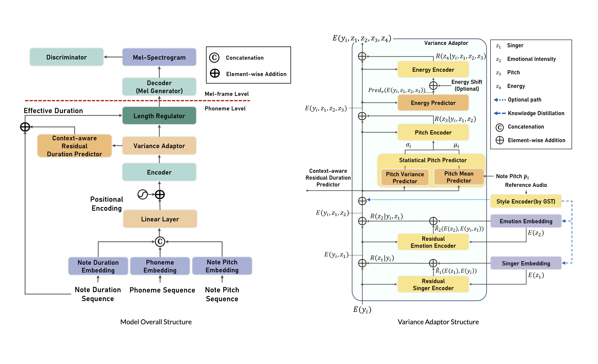
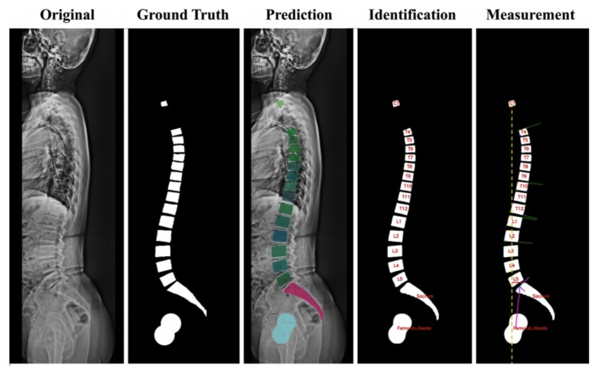

Yewon Kim
I am a Ph.D student in Multisensory Intelligence Lab at UNIST AIGS, South Korea, advised by Prof. Arda Senocak. I received the M.S. and B.S. degrees in Handong University.
My main research interests include but are not limited to Multimodal Learning, especially Audio-Visual Modeling, Acoustic/Speech Processing and Synthesis, and Generative Model.
🎲 Multimodal Learning
👁 Audio-Visual Modeling
🎤 Voice Synthesis
🧙🏻♀️ Generative Model
Publications
3 papers
SoundBrush: Sound as a Brush for Visual Scene Editing

Speak and Sing: Unified Speech and Singing Voice Synthesizer Controlling Timbre, Style, and Emotion

MuSE-SVS: Multi-Singer Emotional Singing Voice Synthesizer that Controls Emotional Intensity
Research Projects
3 projects
[Hyundai]
Haptic Feedback Algorithm for In-Vehicle Video Immersion
Quantize sound source localization model to achieve real-time inference speeds on mobile devices for efficient processing.

[Hancom With]
Video Anomaly Detection
End-to-end pipeline (MD-VIDEO) extracting and summarizing anomalous crime scenes from large-scale surveillance footage into short video clips (GMDSOFT).

[Pohang Stroke and Spine Hospital]
Medical Image Processing
Spine segmentation from X-ray with MedSAM and MRI raw data reconstruction via pixel-intensity mapping for improved diagnostic accuracy (Pohang hospital).
Awards & Honors
2022.11
Participation Award — Daegyeong Region University Programming Contest [Regional Leading Universities Development Project]
2022.06
Grand Award — Capstone Festival
2021.12
Popularity Award — Capstone Festival
Experience
2024.08 – 2024.12
Researcher
AMILab, POSTECH (Advisor: Tae-Hyun Oh)
- Sound-guided image editing
- Sound source localization
Education
2026.03 – Present
Ph.D. in Artificial Intelligence
UNIST
2023.03 – 2024.08
M.S. in Computer Science
Handong University
2018.03 – 2023.02
B.S. in Computer Science
Handong University